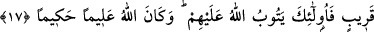
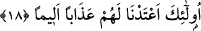

TEVBE
17- Allah’ın kabûl edeceği tevbe, ancak bilmeden kötülük edip de sonra tez elden
tevbe edenlerin tevbesidir; işte Allah bunların tevbesini kabûl eder; Allah her şeyi
bilendir, hikmet sâhibidir.
18- Yoksa kötülükleri yapıp yapıp da içlerinden birine ölüm gelip çatınca «Ben
şimdi tevbe ettim» diyenler ile kâfir olarak ölenler için (kabul edilecek) tevbe
yoktur. Onlar için acı bir azap hazırlamışızdır.
“Allah’ın kabûl edeceği tevbe.” Yâni, tevbesi makbûl olduğunda O’na tevbe edenin
tevbesini kabûl etmek Allah’ın vaadi gereği kendisine vâcib gibidir. “Ancak bilmeden
kötülük” küçük veya büyük günah “edip de hemen ardından tevbe edenlerin
tevbesidir.” Yâni, onlar bu günâhı karıştırarak, bilmediklerinden ve aptallıklarından
işlerler. Çünkü, günah işlemek, câhillikten ileri gelir. Bu sebepledir ki “Cehâletinden
vazgeçene kadar Allah’a karşı gelen câhildir” denmiştir.
Et-Teysir’de şöyle geçmektedir: “Buradaki cehâlet bilmemek mânâsında bir cehâlet
değildir. Çünkü bilgisi olmamak bir mazerettir. Burada bahsedilen ise günahtır. Câhil ve
bilmeyen bir kimsenin yaptığı gibi gâfilane olarak, bilmezden gelerek ve sonunu
düşünmeden kötülük yapmaktır. Onlar işledikleri günahın ardından kısa bir süre sonra
dönerler. Bu süre, ölümün gelmesinden; yâni can boğaza dayanmasından önceki hayattır.
Buna rağmen Allah Teâlâ bu süreyi kısa olarak isimlendirmiştir. Çünkü dünyâ hayatının
müddeti kısadır. Nitekim Allah Teâlâ: “De ki dünyâ menfaati azdır.” (en-Nisâ, 4/77)
buyurmuştur. İşte dünyânın ömrü bile çabuk son bulduğuna göre, bir kişinin ömrü nasıl
olur dersiniz! Bu kısa sürenin bir bölümünde tevbe ederler. Günah işlenmesi ile ölümün
gelmesi arasındaki süre sanki kısa bir müddet imiş gibi isimlendirilmektedir.
Dolayısıyla günah işleyen biri, bu müddetin herhangi bir diliminde tevbe ederse tevbe
etmiş sayılır.
“İşte Allah, bunların tevbesini kabul eder. Allah her şeyi”, yarattıklarını “bilendir”,
dolayısıyla tevbede samîmî olup olmadıklarını da bilir. Yaptıklarında “hikmet
sahibidir.” Hikmet sâhibi ise tevbe edeni cezâlandırmaz.